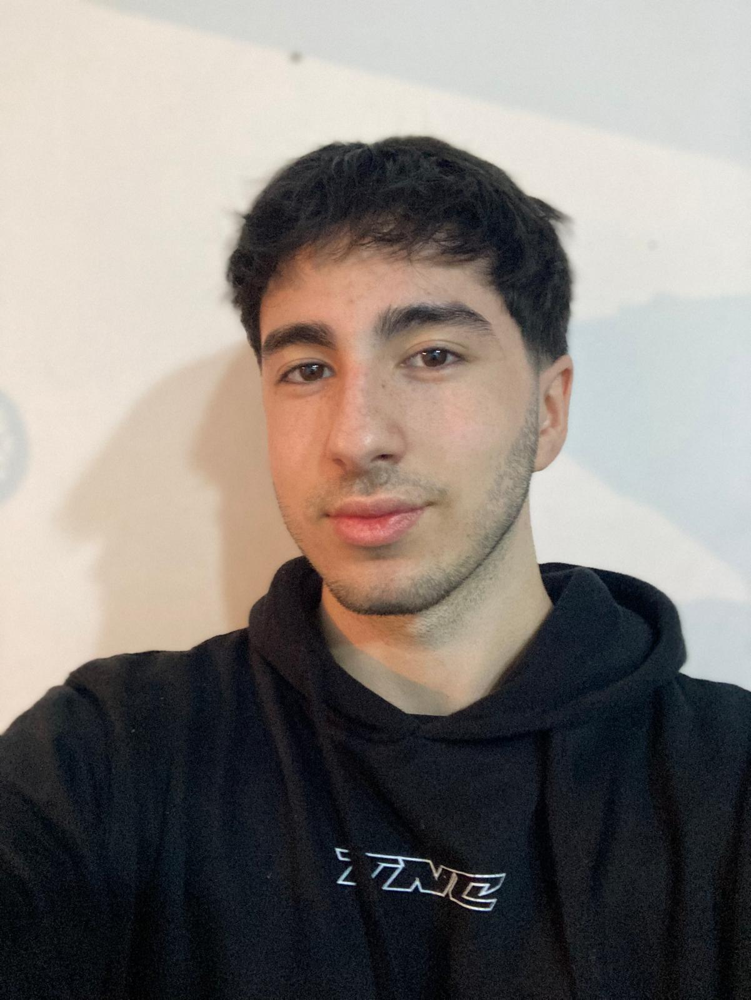

Agustín Casañas

Summary:
I'm a dedicated and detail-oriented person
Eager to improve my skills and increase my knowledge
Education:
- Superior Informatica Highschool (UTU), 2021 - 2023
Work Experience:
Merchandiser at FYG Maketing Agency - 3 Months.
- Ensure products are displayed according to planograms and merchandising standards.
- Good comunication with the store personnel of each branch.
- Build promotional displays and ensure visibility of key products.
- Develop positive relationships with store personnel and collaborate with store managers as needed.
Cashier at Pez Globo (sushi restaurant) - 5 months - Present.
- Handle cash, credit card, and other forms of payment efficiently and securely.
- Take customer orders accurately.
- Answer customer questions regarding menu items, prices, or promotions.
- Handle customer complaints or issues promptly and respectfully.
Kitchen assistant
- Maintain cleanliness and organization in the kitchen area.
- Assist chefs and cooks with basic food preparation tasks.
- Wash dishes, utensils, and kitchen equipment.
- Perform other duties as assigned by the chef or kitchen supervisor.
Skills:
Lenguages
- Spanish (Native)
- English (Advanced)
- Portuguese (Intermediate)
Other
Contact me
My Hobbies